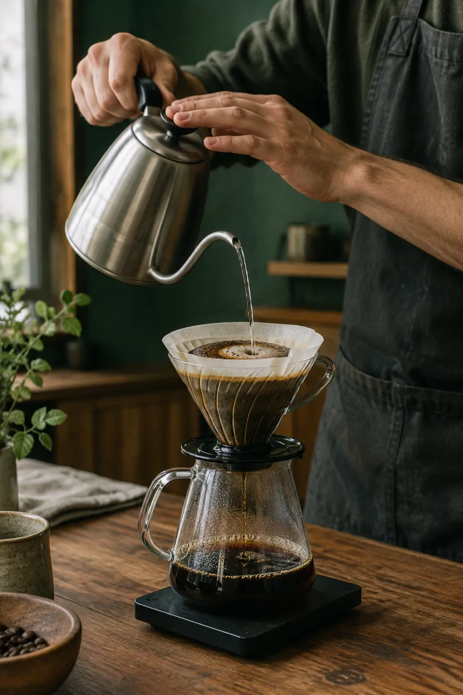

Качество
в деталях.
Вдумчиво выбираем зерно и ингредиенты для каждой чашки.
Хороший кофе. Тёплые встречи.
Моменты, которые остаются с вами.
С выбора зерна, точности в деталях и людей, которым не всё равно.
Мы придумали место, где можно выдохнуть, встретиться и просто побыть в моменте. В каждой чашке — внимание к вкусу и к вам.
Узнать больше ↗
Вдумчиво выбираем зерно и ингредиенты для каждой чашки.
Здесь всегда есть время для встречи и доброго разговора.
От помола до последнего штриха — готовим не наспех.
Свет, музыка и любимая чашка. Всё на своём месте.
Кофе — это не только вкус.
Это свет, люди и время для себя.
Внимание к каждой чашке
Несколько способов заваривания
Авторские рецепты
Атмосфера, в которую возвращаются
Демонстрационные отзывы — не отзывы реальных гостей.
Хороший день начинается с маленькой паузы.
Здесь будет карта кофейни.
Адрес и координаты пока не настроены.